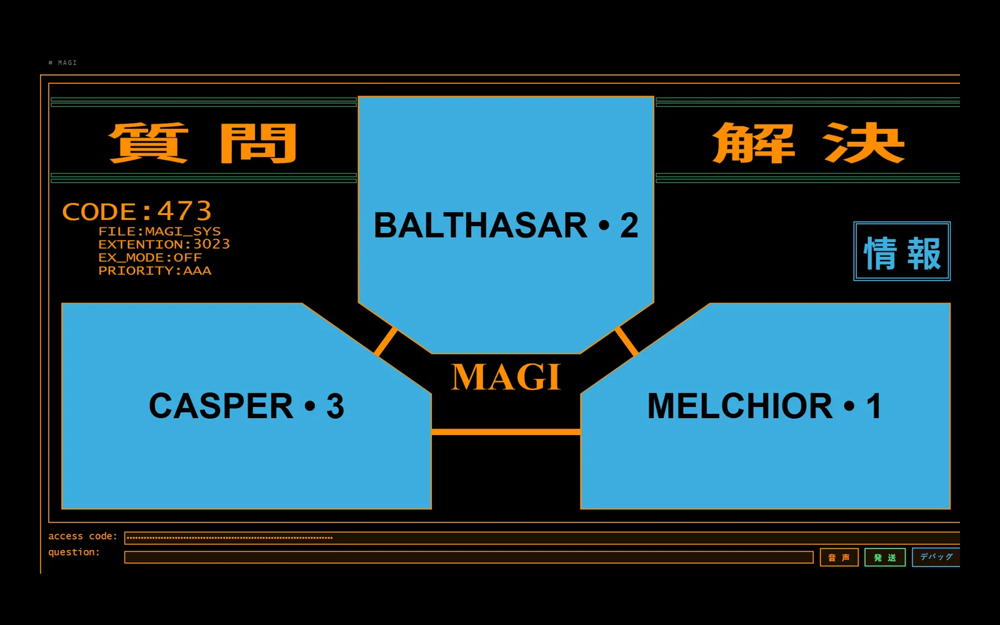

MAGI
MAGI is a console that answers a question three times at once. It is modelled on the supercomputers of the same name in Neon Genesis Evangelion — Naoko Akagi split her own mind into three machines and let them disagree — so the three agents here are not three assistants. MELCHIOR is the scientist, BALTHASAR is the mother, CASPER is the woman: empirical truth, protection of life, and personal desire, each given the question at the same moment and each told, in the system prompt, that it may not hedge and may not break character.
The interesting part is not the three answers. It is what the machine is allowed to do with them. There is no vote and no averaging. The verdict is resolved by severity: any subsystem error makes the whole result an error, then a single no makes it a refusal, then a single conditional makes it conditional, and only a clean sweep of three affirmatives returns agreement. One veto sinks it. That is the rule from the show and it is also the honest one — averaging three personas would produce a number that no agent actually believes.
Getting a persona to a yes or a no takes two calls, not one, and they are deliberately separate. A classifier first decides whether the question is a yes/no question at all, from a purely linguistic standpoint — should I buy new shoes? is one, what is the meaning of life? is not. Only then does each agent answer in character; a second call hands that same agent its own answer back and asks it to compress it to a single word, or, if it cannot, to list the conditions under which the answer would be yes. Open questions skip the whole classification path and return as information. The reason to split it is that a persona told to be decisive will force a yes onto a question that has no yes, and the classifier is the only thing standing in the way.
Every agent can run a different model. Each one resolves its own environment variable through OpenRouter, as do the classifier and the verdict step, so the scientist can be a reasoning model while the other two are cheap and fast. That flexibility is also the failure mode: free endpoints rate-limit and go down, so every completion falls back twice — the assigned model, then the configured default, then a known-good paid model — rather than surfacing a provider outage as a MAGI subsystem fault. Reasoning models needed their own handling too: <think> blocks are stripped, an empty content field falls back to the model's reasoning field, and lines that merely echo the prompt back are filtered out before anything reaches the screen.
The interface is the point as much as the engine, and the discipline I set myself was that nothing on it may be a lie. The status panel looks like set dressing, and mostly is — CODE:473, FILE:MAGI_SYS, PRIORITY:AAA are constants — but the extension field is live state: 7312 when the classifier has ruled the question binary, 3023 when it has not, and ???? for exactly as long as the answer lags the question it belongs to. Staleness is tracked by question id, so a verdict can never be attributed to the wrong question. The sound is synthesised in the browser through the Web Audio API rather than shipped as files: a processing hum while the panels flicker, a different resolution tone per outcome.
Two things I would call fixed rather than finished. Voice input is hybrid — the browser's own recogniser, or Whisper through a small Flask route — and it refuses to try when it cannot work: an OpenRouter key is rejected outright for transcription, because that provider has no transcription endpoint and the key would only fail slowly somewhere else, and anything that still looks like a placeholder is never sent at all. And it runs on an Android tablet as a PWA through a Termux launcher that kills the previous instance, waits for the port to actually answer before opening the browser, and traps its own exit so the server never outlives the window.
What it is not: three independent opinions. The agents share a provider, often a base model, and always the same question — so a unanimous agreement measures how three framings of one model behave, not whether something is true. It is a decision theatre with an honest resolution rule, which is a different and smaller claim than verification. The concept belongs to Hideaki Anno and Gainax; the consensus engine, the interface and the code are mine, MIT licensed.
Services
Applied AI, Interface
Stack
Python, Dash & React, OpenRouter, Web Audio API, Whisper
Status
Running locally · MIT on GitHub
Year
2026

Other Project
HybridMamba-11